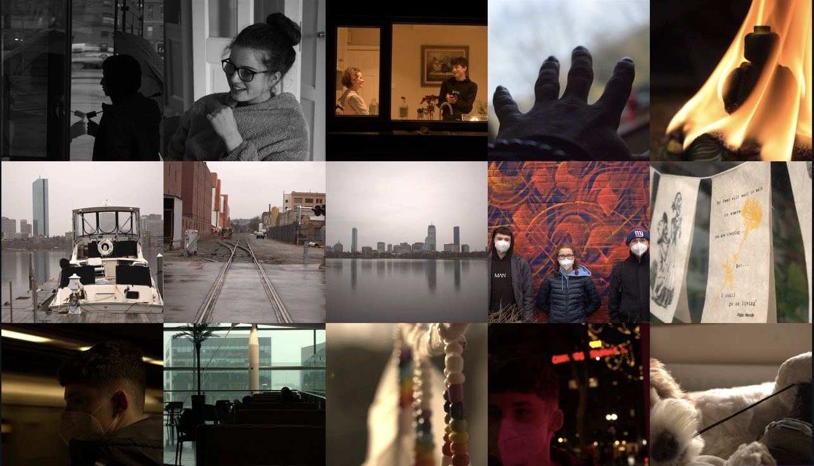

Bringing your Creativity to Life
Services
Photography
A personalised photography session for either a creative or professional setting. Whether you're a business, family or just looking to have some fun, we cater for all! An average session is two hours but we are more then happy to extend this to a full day or even several days depending on the quantity of work you require.
Video
Whether you require a professional promotional video for a business or are interested in shooting a short film our state of the art equipment is more than capable. After shooting, we will edit and perfect your footage in post and return it to you in no time! Get in contact with us to let us know whatever it is you require.
Sound
We offer our services in assisting you with recording, producing or creating your own music. With our state of the art equipment and talented staff we will help you create a hit, record a podcast or simply film an interview. An average session is two hours but we are more then happy to extend this to a full day or even several days depending on the quantity of work you require.
About us
'Titan Sound and Media' was founded by Cork based duo Pierce McNulty and Darragh Murphy. From a young age both were fascinated by the art of expression through creative media. Pierce has a deep rooted passion for photography which he has nurtured for years. He has blossomed into a talented young photographer and more recently an adept film maker, rarely seen without a camera around his neck. Darragh on the other hand has always been more in tune with everything sound. From music to podcasts to sound design his wide variety of talents allows him to contribute something to nearly any project. Similarly, he too enjoys the challenge and creative expression in film making. Together they have collaborated on many projects culminating in the creation of 'Titan Sound and Media'.
Equipment
Cameras:
- Nikon D3300
- Canon EOS 4000D
- GoPro HERO Plus Action Camera
- EF-S 18-55F/3.5-5.6 III
- AF-P NIKKOR 18-55mm 1:3.5-5.6G
- On-Camera Multicolor LED
- Reversible reflector
- Studio Lighting
- Light stands
- Shure Sound SM7B Condenser Studio Microphone
- Various High Quality Lapel Mics
- BOYA BY-NM1 Shotgun Microphone
- Focusrite Scarlett 4i4 3rd gen Audio Interface
- 2x16GB & 1x4GB high speed SD cards
- Tripods for Mics, Cameras and lighting
- Various XLR cables
- Camera Slider
- Green, Black and White screen
- Handheld/stationary Gorilla Tripod
Gallery
Contact
titansoundcork@gmail.com
087 446 4330